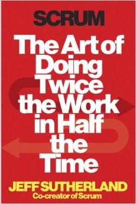

I had the pleasure to pick the book: The Art of Doing Twice the Work in Half the Time by JJ Sutherland. Needless to say it was a great read. It was great to hear from one of the founders of scrum how and why it came to be. Since my work is going through some pains in getting agile and scrum running smoothly I was asked to share a presentation based on the book. Keep reading or check out the presentation here.
1. Old Way
Waterfall
- try to plan it all out
- gantt charts
- limited customer interaction
Why doesn't this work?
- Doesn't account for change
- People are bad at estimating
- Doesn't solicit feedback
- Usually we don't know everything
2. New Way
SCRUM
- Evolutionary
- Adaptive
- Self Corrective
- Small teams
- Prioritized tasks
- Daily stand-ups
Why does this work?
- Encourages improvement
- Encourages feedback
- Eliminates waste
- Usually we don't know everything
- Makes people happy
You must plan for change & fail fast
- You want to figure out what you don't know
- You want to discover problems as soon as possible
Proven to deliver
- Fewer people
- Less time
- More stuff
- Higher quality
- Lower cost
3. Teams
Great teams are:
- Autonomous
- Cross functional
- Empowered
- Small (7 +/- 2)
4. Time & Waste
"Time is finite, treat it that way."
No more meetings
one 15 minute standup
No multi-tasking
- It makes you stupid and you are worse at both tasks
- Context switching is difficult and takes time
Do it right the first time
- Half done isn't done
- Fix issues right away
- It costs less and saves time
Sustainability
- Working long hours gets less done
- Don't be unreasonable
- No heroics
- No stupid policies
Examples
- Toyota
- Medco
5. Planning
- Plan for reality not fantasy
- Only plan what you need to do
Break your work into stories
- As a (who)
- I need (what)
- So that (why)
Stories should be small
- Independent
- Negotiable
- Valuable
- Estimable
- Small
- Testable
Use relative sizing
- People suck at absolute sizing
- People are good at relative sizing (story points)
Velocity
- When you know how fast you are going you will know when you are going to get there
- Are you improving?
- When SCRUM is implemented well production can increase substantially
6. Priorities
Delivering value...
Make a list and check it twice
- Make a list of everything for the project and prioritize it
- Highest value and lowest risk at the top
Minimum Viable Product (MVP)
80% of the value is in 20% of the work
The Product Owner
What needs to be done and why you should do it
The Team
How to make it happen and who should do it
Money for nothing and change for free
- Create new things only as long as they deliver value
- Be willing to swap them for things of equal effort
- What is needed in the beginning is never what is actually needed
7. Happiness
"Too often we just reward results, but what we really want to reward is people striving towards greatness"
Why is happiness important
- Smarter decisions
- More creative
- Retention
- Accomplish more
Are we getting better?
Every sprint we should be trying to get better at something
Transparency
Secrecy is poison